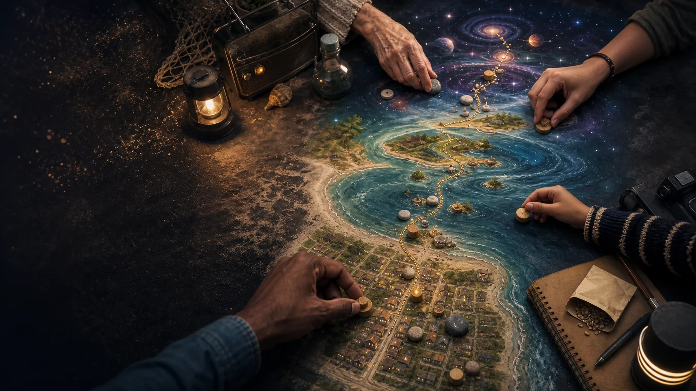

Choice
Pick a door.
Household, street, island, civic, research and story paths can sit beside one another without one central authority assigning roles.

Gamification of a seven-generation build
The game language turns the long mission into visible choices: solve a problem people feel now, create useful capability, and open an easier next move towards joyful responsible abundance. People remain free to enter, pause, change paths or step away.
GenAI concept image for documentary development.
The gentle rule
A fire, flood, war, illness or personal loss is not a boss battle. The playable part is what people learn, share, repair, protect, practise or imagine before and after pressure.
Choice
Household, street, island, civic, research and story paths can sit beside one another without one central authority assigning roles.
Care
Scores can describe capability or progress. They do not compare trauma, grief, worth or who deserves help.
Honesty
Established evidence, local sources, models, disputed ideas, speculation and stories remain visible as different kinds of material.
Possible game pieces
These pieces can appear in narration, on-screen graphics, workshops or a companion tool. The film can use only the ones that feel human.
Self, household, street, island, South East Queensland, Australia, planet and deep time. A move at one scale can affect another.
A person, family, club, business, volunteer group, researcher, filmmaker or community can enter through a role they recognise.
Power, water, food, health, communications, shelter, knowledge, trust and ecological care offer a possible dashboard.
Learn, check, store, grow, repair, share, teach, map, model, film, rehearse and organise. Paths can branch or overlap.
A storm, blackout, freight delay or fictional cosmic event tests the same map at a different intensity and time scale.
Trusted relationships, clear records, backups, local skills, rehearsals and working tools help capability survive a setback.
The main campaign
The campaign does not begin by asking people to approve a giant underground city. It begins with useful work whose success can make the next stage easier to consider.
Quest test
Transport, community space, erosion control, energy, local materials, repair and services give the first moves meaning before the far horizon is reached.
Unlock test
A useful move can leave tools, skills, data, products, trust, income or infrastructure that lowers the difficulty of the next move.
Country test
Ecology, culture, authority, water, surface life and future generations can shape the route rather than becoming costs hidden by the scoreboard.
Sample quest cards
The cards are story prompts, not public-safety instructions. Detailed actions can link to current, suitable guidance.
Household quest
Walk through what the household relies on during an ordinary day. Notice one gap, one strength and one current source worth checking.
Street quest
Film two people discovering complementary knowledge, tools or availability without building a public directory of private details.
Island quest
Trace a meal, medicine, repaired device or information notice from source to use, then show where local capability helps.
Repair quest
Follow diagnosis, parts, skill, safety and handover. The story becomes supply chains in miniature.
Truth quest
Show the date, place, evidence label, what the source supports and what remains open.
Screen quest
Use a storyboard, simulation or fiction scene with a visible Story label, then ask what it teaches about real capability.
The GAJRA Earth win condition
Survival keeps the game running. Winning means people and living systems have time, health, agency, beauty, relationship, play, knowledge and room to create, without borrowing the abundance from Country or the next seven generations.